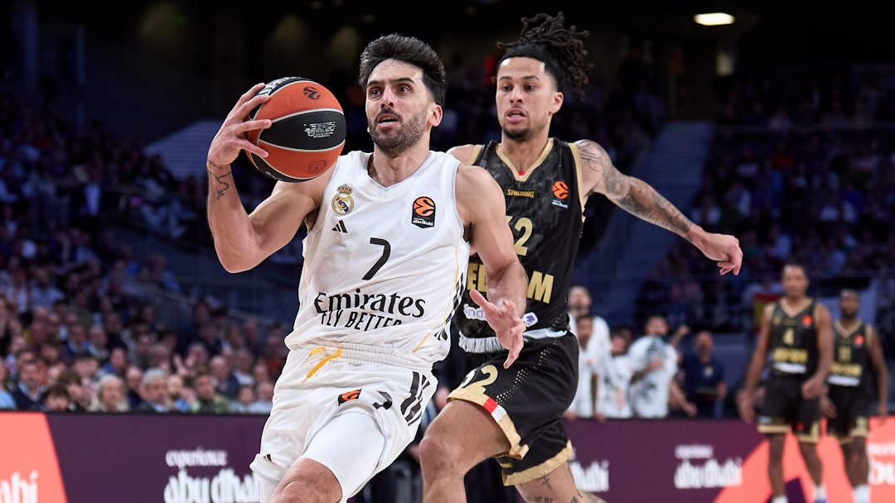
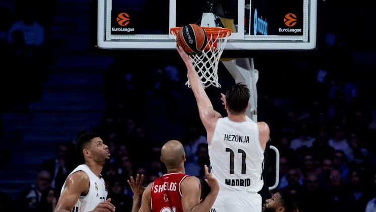

Feature
Real Madrid en la Euroliga: entre la amenaza del play-in y la promesa de una reacción
El equipo blanco sigue siendo temible, pero su futuro europeo depende de resolver una contradicción: en casa parece candidato a todo; fuera, todavía no transmite la misma autoridad 🏀
El Real Madrid afronta el tramo decisivo de la Euroliga instalado en una zona ambigua: lo bastante bueno como para aspirar a un cruce grande, pero todavía demasiado irregular lejos de Madrid como para sentirse a salvo. El futuro inmediato del equipo pasa por convertir su solidez en casa en una identidad completa y por encontrar continuidad competitiva en los partidos de máxima tensión.

El Real Madrid vive en la Euroliga una de esas temporadas que invitan tanto a la ilusión como a la cautela. No está roto. Tampoco está plenamente hecho. Está, más bien, en ese punto incómodo y fascinante en el que un gran equipo todavía no ha terminado de decidir qué quiere ser cuando llegue la hora de la verdad.
Y ese es exactamente el debate: ¿este Madrid está construyendo una candidatura seria o simplemente sobreviviendo hasta abril?
Key takeaways
Key Takeaways
- El Madrid sigue muy vivo en la pelea alta, pero no tiene todavía margen para la relajación.
- Su rendimiento en casa transmite jerarquía; fuera, en cambio, sigue dejando demasiadas dudas.
- La plantilla tiene talento, físico y experiencia para competir contra cualquiera.
- El futuro inmediato no depende tanto del techo del equipo como de su capacidad para sostener su nivel en contextos hostiles.
- Más que una revolución, lo que necesita es una versión más estable de sí mismo.
1. Un equipo que intimida… pero no siempre convence
La gran verdad del Real Madrid en esta Euroliga es que sigue siendo uno de esos rivales que nadie quiere cruzarse. Tiene tamaño, tiene oficio, tiene nombre y tiene jugadores capaces de dominar partidos grandes. Pero también arrastra una irregularidad que impide colocarlo, sin discusión, entre los favoritos más fiables del torneo.
Ese contraste se ve con claridad en su rendimiento como local y como visitante. En Madrid, el equipo ha construido una fortaleza reconocible: ritmo, defensa, confianza, control emocional. Fuera de casa, en cambio, ha perdido parte de esa autoridad. Y en la Euroliga, donde cada detalle pesa el doble, esa grieta puede marcar una temporada entera.
No es un problema menor. Es, probablemente, el problema.
2. La clasificación no engaña: el margen es mucho más pequeño de lo que parece
El contexto competitivo tampoco permite lecturas complacientes. El Madrid está metido en un grupo apretadísimo, donde una victoria te impulsa y una derrota te vuelve a empujar hacia la zona incómoda. En un torneo que lleva a los seis primeros directamente al playoff y manda del 7º al 10º al play-in, no basta con “estar ahí”. Hay que llegar bien, y llegar arriba.
Por eso el debate sobre el futuro del Madrid no es solo si entrará en las eliminatorias. La pregunta más interesante es otra: ¿llegará con ventaja competitiva o llegará obligado a jugar al límite antes de tiempo?
Evitar ese peaje puede cambiarlo todo. Porque un equipo con experiencia como el Madrid, si entra en un playoff con seguridad, descanso relativo y una rotación estable, multiplica su peligro. Pero si se ve empujado a una ruta más larga, con partidos de vida o muerte y sin margen de error, el camino se complica mucho más.
3. La plantilla tiene mimbres de sobra para crecer
Lo más esperanzador para el madridismo es que el equipo sí tiene base real para pensar en un final fuerte. La presencia de Walter Tavares sigue condicionando partidos por pura dimensión. Facundo Campazzo continúa siendo el termómetro competitivo del grupo. Y alrededor de ellos, perfiles como Mario Hezonja, Gabriel Deck o la profundidad física del juego interior permiten imaginar un equipo preparado para series largas.
Además, el regreso de Sergio Scariolo abre una lectura interesante. Más que un giro brusco, su presencia apunta a una idea de control, experiencia y gestión de contextos complejos. En tramos finales de temporada, eso suele importar tanto como el talento puro.
El Madrid no necesita convertirse en otro equipo. Necesita parecerse a su mejor versión durante más tiempo.
4. Entonces, ¿qué futuro le espera?
El futuro del Real Madrid en esta Euroliga no parece el de un equipo condenado, pero tampoco el de uno ya lanzado. Su horizonte más realista hoy está entre dos escenarios.
El primero, el optimista: corrige su fragilidad fuera de casa, consolida su identidad defensiva y llega al playoff como uno de esos gigantes que nadie quiere tocar. Si eso ocurre, puede competir por estar muy arriba. Tiene experiencia, tiene colmillo y tiene jugadores acostumbrados a los partidos que deciden temporadas.
El segundo, el más inquietante: mantiene esa doble cara, se desliza hacia una clasificación más incómoda y entra en la fase decisiva jugando siempre al borde. Y cuando una temporada se convierte en una sucesión de urgencias, hasta los equipos más grandes acaban expuestos.
Hoy, sinceramente, el Madrid está entre esos dos relatos.
Conclusión
El Real Madrid todavía no ha dicho su última palabra en la Euroliga. De hecho, quizá su mayor virtud sea esa: incluso cuando no termina de convencer, sigue siendo peligrosísimo. Pero el escudo y la historia ya no bastan por sí solos. En esta competición, el futuro se gana en los detalles: una defensa más estable, una mejor gestión emocional fuera de casa, una identidad más constante.
La buena noticia para el madridismo es que hay tiempo, talento y experiencia para corregir el rumbo.
La mala es que en la Euroliga nadie espera a nadie.
Y este Madrid ya no está en fase de promesa.
Está entrando, por fin, en la fase de verdad.

